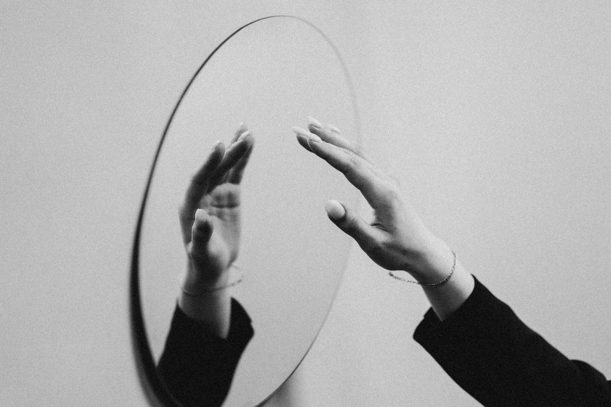

Cosa significa “arrampicarsi sugli specchi”? Significa cercare di trovare una scusa o una giustificazione che non regge.
Questa espressione si usa quando qualcuno sta cercando di spiegare o giustificare un comportamento in modo che non è convincente. Gli specchi sono scivolosi e lisci, impossibili da scalare, e questa immagine rende bene l'idea di qualcuno che si aggrappa a spiegazioni deboli e poco credibili. È un modo colorito per dire che le scuse o le spiegazioni non stanno in piedi e sono facilmente smontabili.
Da non confondere con l'arrampicata reale! Questo modo di dire è una metafora che indica l’inutilità e la difficoltà di trovare appigli in situazioni complicate. Non ha nulla a che vedere con l’arrampicata vera e propria, ma sottolinea come le giustificazioni di chi “si arrampica sugli specchi” siano deboli e destinate a fallire.
Arrampicarsi sugli specchi - Sinonimi e Contrari
Sinonimi
- Scusarsi
- Giustificarsi
- Inventare scuse
- Arrampicarsi sugli specchi
Contrari
- Ammettere
- Accettare
- Riconoscere
- Confessare

Esercizio
1. Quando Luca ha cercato di spiegare perché non aveva fatto i compiti, stava chiaramente arrampicandosi sugli specchi.
Mostra Risposta
Appropriato: Sì, l'espressione è usata correttamente per indicare che le scuse di Luca non erano credibili.
2. Maria ha detto che non poteva venire alla festa perché doveva lavarsi i capelli. Era come arrampicarsi sugli specchi.
Mostra Risposta
Appropriato: Sì, l'espressione è usata correttamente per suggerire che la scusa di Maria era debole.
3. Ho visto un uomo arrampicarsi sugli specchi nel circo ieri sera.
Mostra Risposta
Non appropriato: No, l'espressione non si riferisce a una vera arrampicata sugli specchi, ma a una giustificazione debole.
This expression means trying to find an excuse or justification that doesn’t hold up. It is used when someone is attempting to explain or justify a behavior in an unconvincing way. Mirrors are slippery and smooth, impossible to climb, and this image perfectly illustrates someone grasping at weak, unconvincing explanations. It’s a colorful way to say that the excuses or explanations don’t stand up and are easily debunked.
Not to be confused with real climbing! This saying is a metaphor indicating the futility and difficulty of finding solid footing in complicated situations. It has nothing to do with real climbing but highlights how the justifications of someone "climbing on mirrors" are weak and destined to fail.